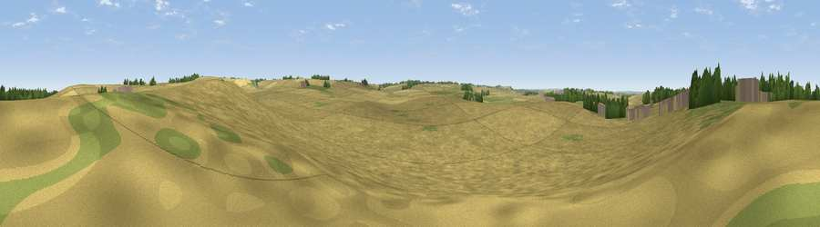

Deadman's Hill
#45017 in England · top 77% of its area beats it · near BygraveThe view, rendered

A 360° render of this exact spot computed from the terrain model, tree cover and land cover — summer colours, afternoon light, calibrated against photographs of famous viewpoints. Real trees, hedges and buildings will differ in detail.
The panorama
Grey silhouette: terrain skyline in each direction (720 bearings, Earth curvature and refraction included). Dashed green: skyline with trees (+15 m) and buildings (+8 m) as obstacles. Blue strip: how far the ground is visible on each bearing.
Where the view opens
Wedge length = distance to the farthest visible ground on that bearing (vegetation-aware). Rings at 10, 25 and 50 km.
What fills the view
92% cropland · 6% grassland · 2% woodland ·
Angular shares of the visible panorama (visual magnitude), not map area. Landscape diversity 0.16 (0–1 Shannon).
Key numbers
More beautiful places nearby
The staircase of upgrades: each row has a higher view potential than everything closer. Driving times are estimates from straight-line distance, calibrated against real road routing — check an actual route before setting out.
| Place | Direction | Drive | Score |
|---|---|---|---|
| Highley Hill | NW · 1 km | ~3 min | 30.3 |
| Gallows Hill | NE · 2 km | ~4 min | 46.6 |
| Viewpoint near Royston | ENE · 6 km | ~12 min | 56.6 |
| Viewpoint near Hexton | WSW · 18 km | ~32 min | 65.4 |
| Viewpoint near Church End | WSW · 33 km | ~51 min | 65.8 |
| Beacon Hill | WSW · 39 km | ~58 min | 74.1 |
| Viewpoint near Halton | WSW · 49 km | ~69 min | 74.3 |
| Coombe Hill Monument | WSW · 54 km | ~75 min | 75.5 |
52.01679, -0.11662 · source: osm peak · position refined by local search. Computed location — check access rights before visiting.